The Vine 18th March 2011
Up for it were:
Yup, Mid week Tone, Pedro, Granpop Bill, Jaycee, Dasher, Corky, Ali G, Mothy and Sean of the County Wollers
What a treat we had in store today ............ A trip to the Vine in West Brom, as recommended by Tim from 'He and She' in Kingsway, Stoke.
All inclusive train tickets were bought at £14.20 return. There were some complications regarding the validity of the ticket on certain routes but we were going to act dumb; pretty easy really. Pedro paid the extra 80p in case we got pulled up by a keen conductor on the Metro, and because he didn't want to act dumb. mmmmmm.
The original proposed travelling times and itinery were:
Outbound:
Train leaves Stoke at 13.07, via Stafford at 13.24, arriving in Wolverhampton at 13.39
Wolverhampton Pubs for approx 3hrs - The Great Western for lunch, the Tap and Spile and the Hogshead.
Leave Wolverhampton at 16.49 arriving at Smethwick Galton at 17.04
Leave Smethwick Galton at 17.16 arriving at The Hawthorns at 17.19
Return Journey:
21.27 Hawthorns to Smethwick Galton arriving 21.29
21.46 Smethwick Galton to Wolverhampton arriving 22.03
22.16 Wolverhampton to Stockport stopping at Stafford 22.29 and Stoke 22.53
To add a few more complications to the travelling, there was a power failure and we ended up travelling Stoke-Wolverhampton, a short walk to the metro station, and then a single journey to Kendrick Park on the metro. It should have cost more but the tickets we'd bought became valid for the day.
It was yet again a bright and sunny dry day. Tim, arriving and catching the train by the skin of teeth, jumped aboard with 2 seconds to spare before we headed off to Wolverhampton. It was a relief for Jaycee who’d just bought his ticket. As we approached Wolverhampton, there were worrying signs as the train slowed down to a stop. There were signal failure problems evidently. Eventually we arrived in Wolverhampton and met up with Sean of the County Wounties.
We stepped out of the station and took a scenic route around the ring road to find the Great Western pub sitting under one of the railway arches, just 100m from the station. If only we'd have taken a right turn somewhere !!
The Golden Glow was the out and out top choice although they had several others to choose from, including some dark ales for Pedro and Dasher. Linking arms Dasher became enrolled into the jug club. Would he regret it later?
There were mini meals or standard meals to choose from. There was never any doubt when Granpop Bill saw the choice, that he'd have anything other than a large meal. I'll have a bigun to keep me going youth', he confirmed.
'Who are the 2 faggots?' asked the waitress. 'That'll be Tim and Jaycee', came the response from the table.
A couple from the Morton Brewery sitting nearby recommended a visit to their brewery and also suggested we call into the Pasada pub, near the Hogs Head just off Stafford St., where their was a good selection of ales generally, including theirs. www.mortonbrewery.co.uk. So guess where we went next !!
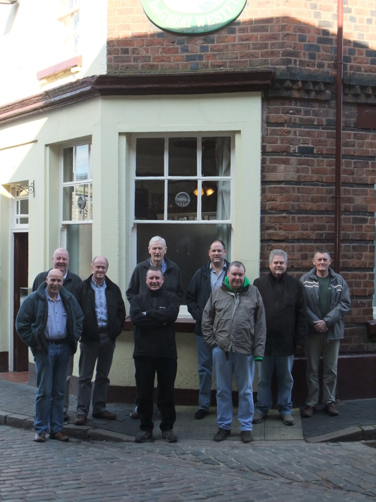
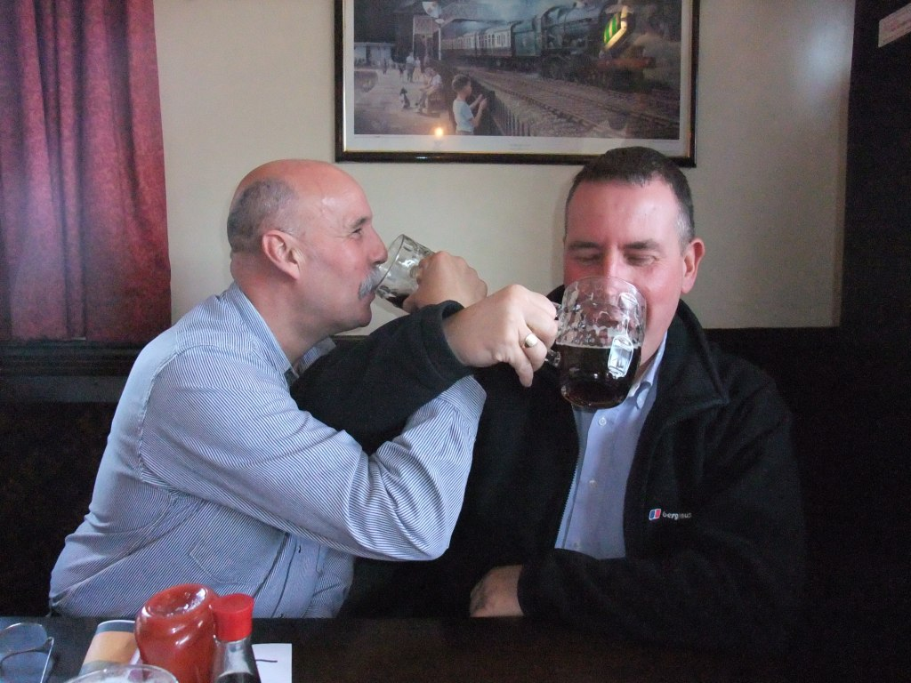
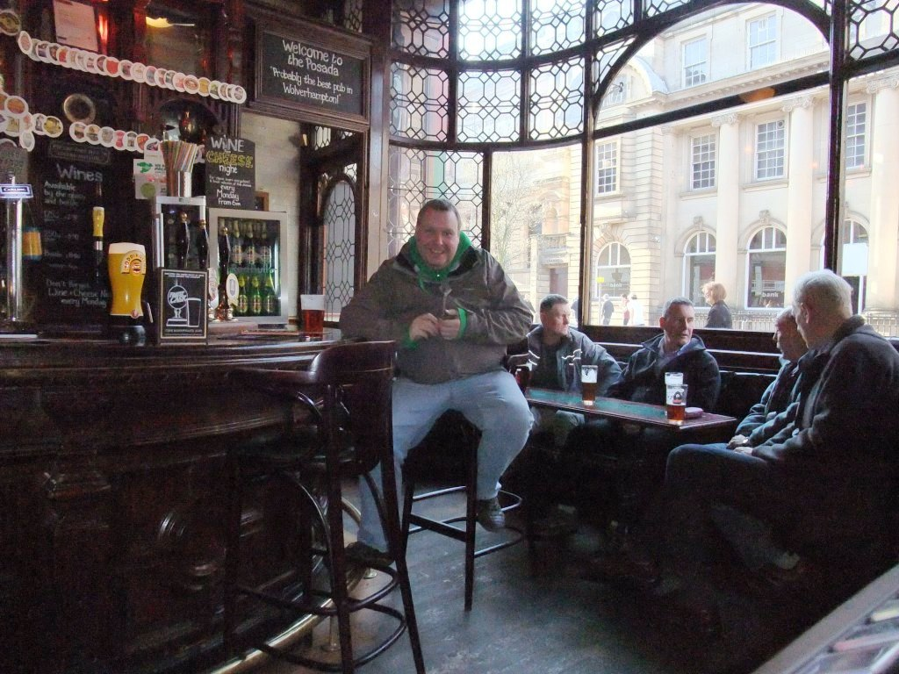
The Posada was ok but quiet, so we didn't stay too long and moved on to the scheduled Hogs Head in Stafford St. At least us CAMRA members got 10% off (except for Jaycee who'd forgotten his card !)
Oh dear, Dasher was on Mollys chocolate stout with a straw, egged on by Pedro.
Was he going to survive the day?
The Enville White seemed a good choice from memory.
Sadly we gave the Tap and Spile a miss as time was running out and somehow we found the metro station and the right train to West Brom. Why we went to West Brom rather than jumping off at Kendrick Station is anyone's guess.

As we walked up from the station and past the West Brom football ground we thought we could smell freshly baked bread, or was it ‘Boing, boing, bag of shxx’, asked Jaycee.
Ali Gee tried to get in to investigate. He was getting hungry.
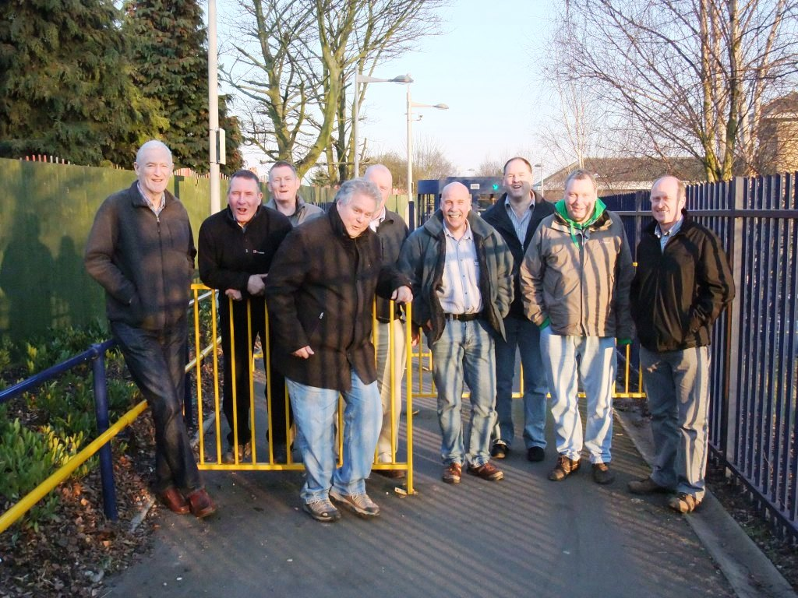
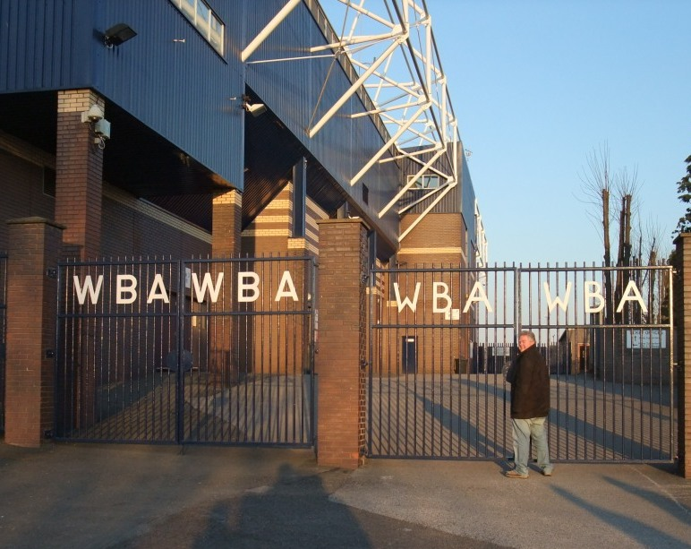
Crossing the M5 we located Roebuck Street and followed the map down to the Vine. Unless you had a map or knew where it was you would easily miss it.
A hidden gem within an industrial estate.
A snug had been reserved for us to the side of the bar area. 2 other large rooms were beginning to fill up.
There were specials, standard curries and BBQ’s available, clay pots and tin pots, and real ale at the bar. What more could a man want.
The BBQ's were £3.50 whilst the main dishes including rices and nan were a bargain at around £7.50.
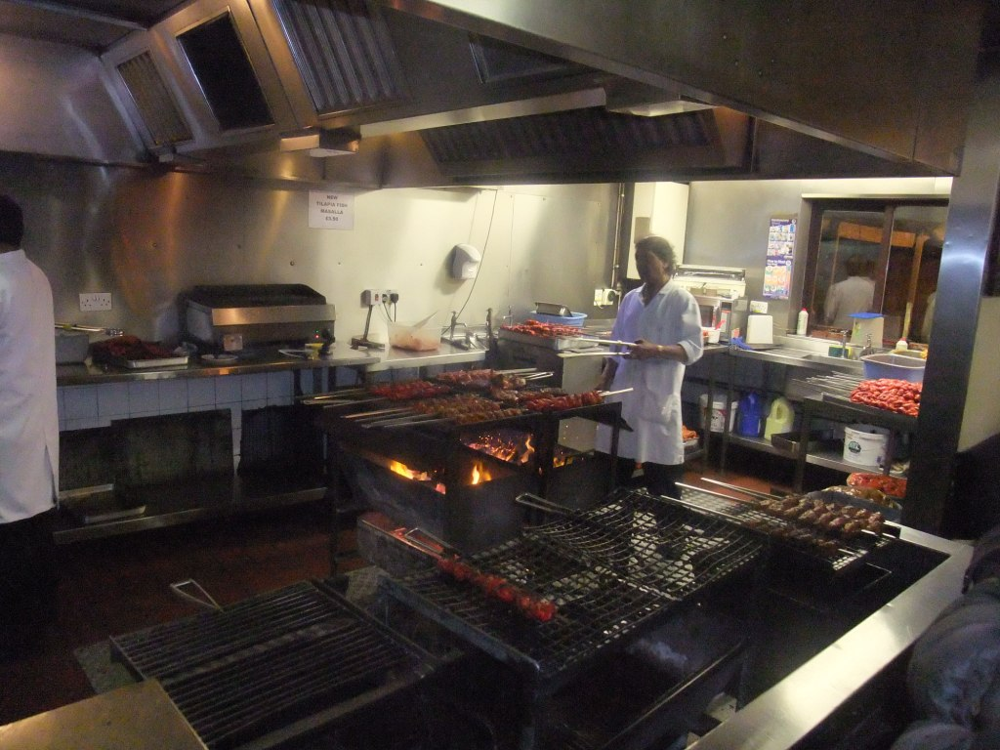
Dasher and Pedro went straight for the main curry, passing on the bbq starters, although Pedro accepted all spare chunks without being asked twice. There were all types of meat available, but when asked if we wanted goat curry, well, 'you've got to be kidding', someone bleated.
The guest beer was Gold Airmale Pale Ale – a Gold medal winner, and went down well.
Several went for the bbq'd hot chicken tikka masalla, which lived up well to its description, and then a honey and chillie chicken main at £4.25, with rice and nan at around an extra couple of quid each.
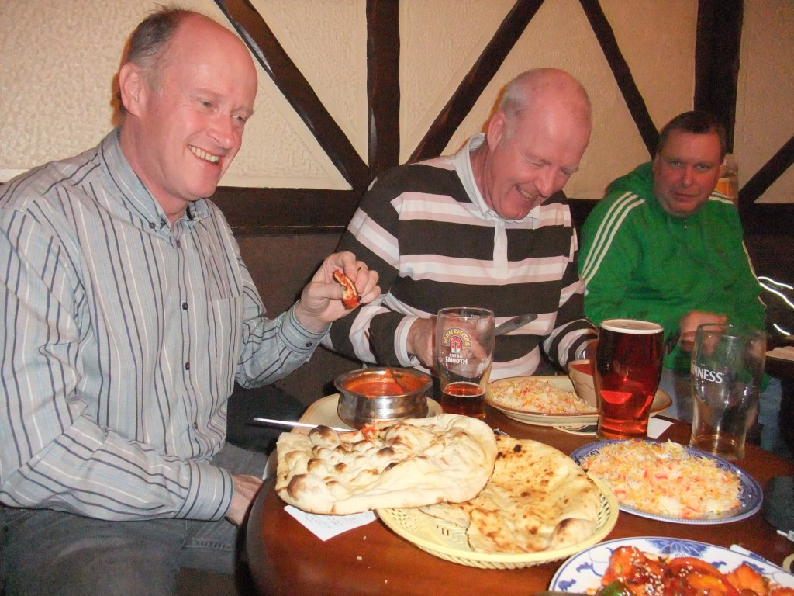
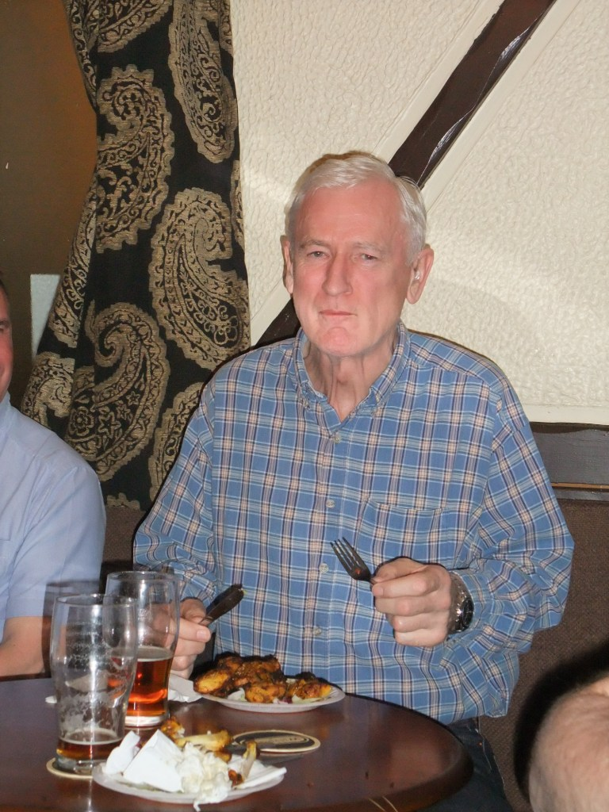
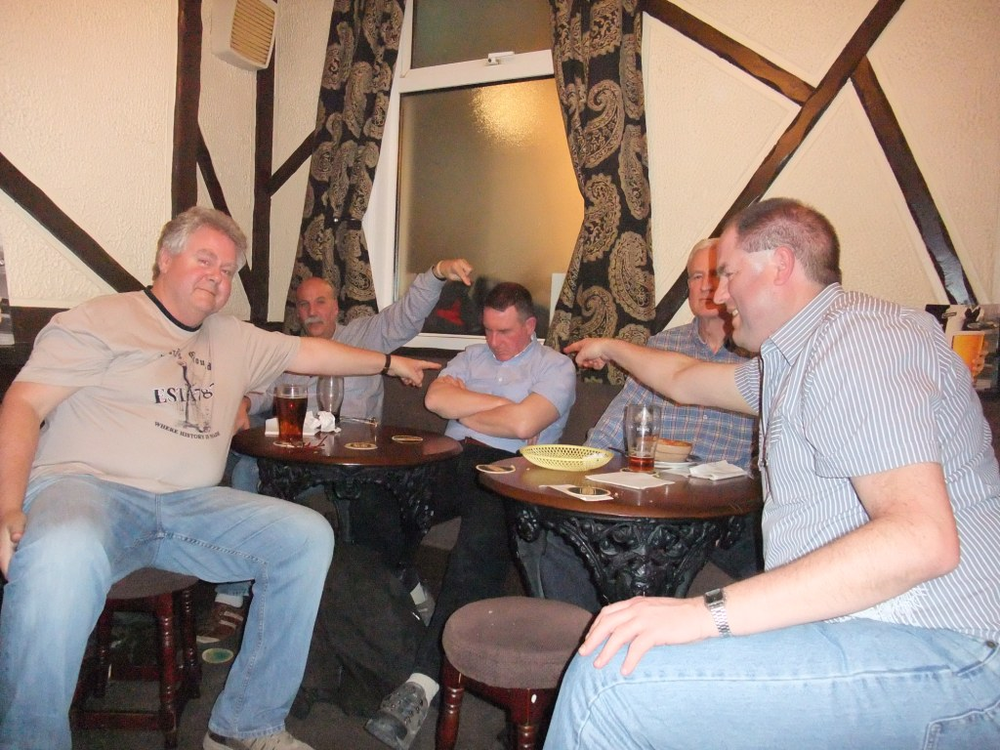
The jugs and the straw began to take their toll on Dasher, who took 40 winks while we supped up.
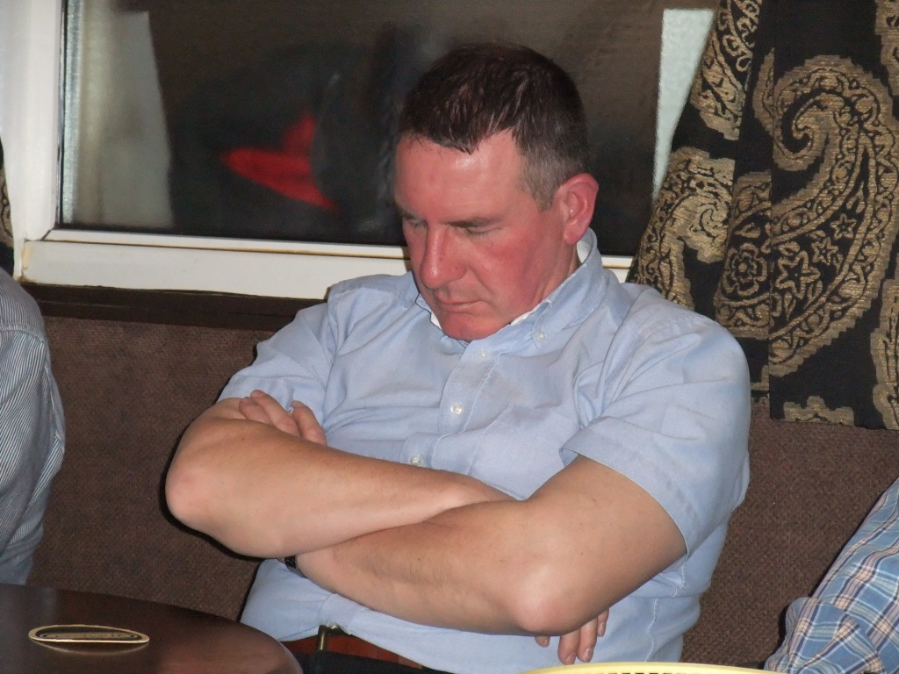
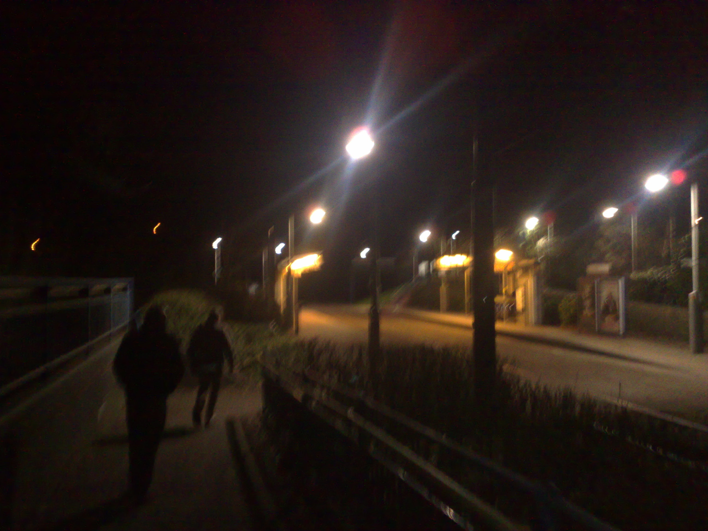
There was no final bill to settle up as you paid for your meal when ordering. So we made our way down a poorly lit area to Kendrick Park metro station, about 10 minutes away. I wouldn't recommend this route if you hadn't got Granpop Bill with you..
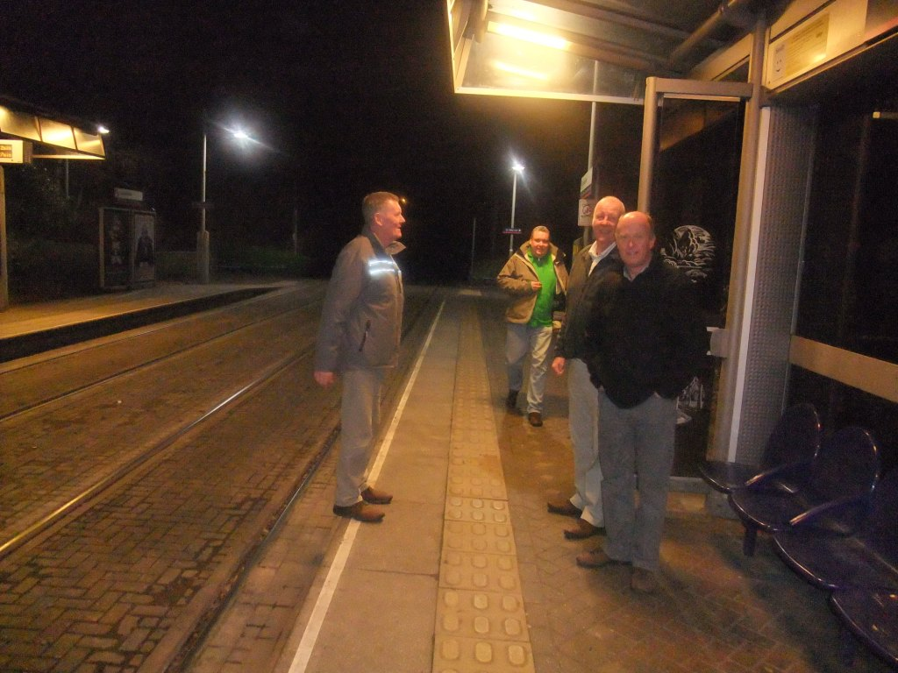
Pedro and Dasher continued straight back home whilst the rest of us headed back to the Great Western knowing that there were later trains available. A warning came through though from Dasher about the effects of power cuts to the service. Ah well, we'd just have to get a taxi.
Things looked up though as we entered the Great Western. As luck had it there had been a party with a huge buffet on in the back room. Yes, platefuls of spare sausage rolls and vol-au-vents; just what we needed.
Graham had finally met his match, having shared rounds all day with Granpop Bill. He admitted being 'beered out' and turned to orange juice. Well done Bill.
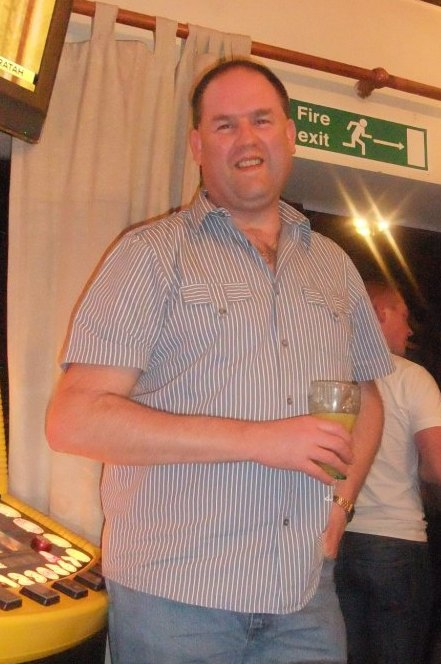
The train from Wolverhampton was on time. We knew there wouldn't be any delays.... Bill sat on the train reading a paper with a wry smile on his face. ‘These young wippersnappers can’t take it youth’, he said, as Corky slid deeper and deeper into his seat.
We jumped off at Stafford to catch the final train of the day to Stoke, whilst Corky stayed on board to continue on to Crewe and onto Stockport. Hopefully that was his intention, unless he'd fallen asleep....
Our luck finally ran out. We waited and waited in one of their glass waiting rooms, probably for almost an hour. A friendly station manager however, kept us up to speed with news on the delays and when to expect the train. I thought that was rather decent of him.
A brilliant day out and one worth waiting so long for.
A definite must do again doooo.
Yuppers
(enjoy yer Vine)